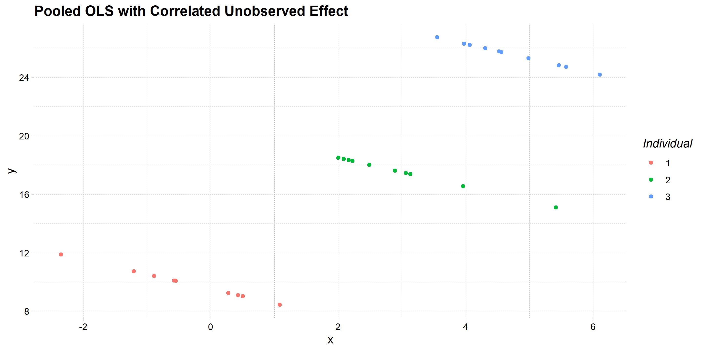
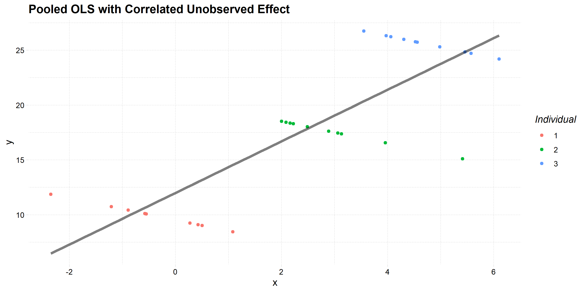
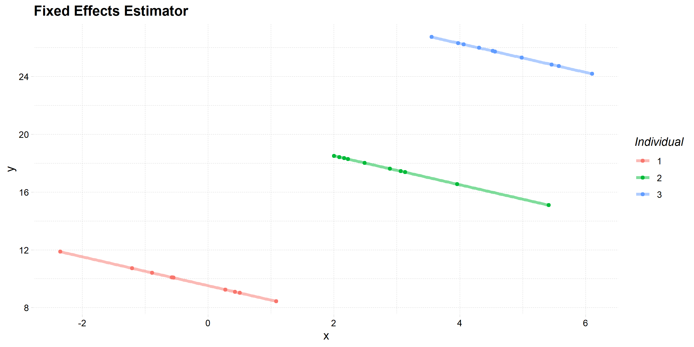

Panel Data
EC655 - Econometrics
Justin Smith
Wilfrid Laurier University
Fall 2023

Panel Data Basics
Introduction
Repeated observations of some individual unit along some dimension
Observing same people/firms/countries over time
Second dimension does not have to be time
Panel data can be used in several ways
Eliminate individual heterogeneity
Increase variation (reduce standard errors)
Study dynamics
In microeconometrics, panel data mostly controls for individual heterogeneity
We will study
Basic panel data methods
Using panel data to identify parameters
Structure of Panel Data
Panels have at least 2 dimensions
- Variation occurs over \(i=1,\ldots,N\) people, and \(t=1,\ldots,T\) time
A balanced panel is one where all individuals are observed in every time period
An unbalanced panel has at least one person not observed in a time period
Balanced Panel
| ID | Year | Income |
| 1 | 1990 | 60000 |
| 1 | 1991 | 65000 |
| 1 | 1992 | 90000 |
| 2 | 1990 | 20000 |
| 2 | 1991 | 21000 |
| 2 | 1992 | 24000 |
Unbalanced Panel
| ID | Year | Education |
| 1 | 1990 | 60000 |
| 1 | 1991 | 90000 |
| 2 | 1990 | 20000 |
| 2 | 1991 | 21000 |
| 2 | 1992 | 24000 |
Pooled Regression
Model
- Write the regression model as
\[y_{it} = \mathbf{x_{it}}\boldsymbol{\beta} + e_{it}\]
Recall that \(i\) indexes individuals, and \(t\) indexes time
One approach is to ignore the panel structure
This is called Pooled Regression since it pools data across people and time
The slope from population least squares is
\[\boldsymbol{\beta}^{*} = E[\mathbf{x_{it}}'\mathbf{x_{it}}]^{-1}E[\mathbf{x_{it}}'y_{it}]\]
Model
If \(\boldsymbol{\beta}\) is defined as the population least squares slope
- The error term \(e_{it}\) is the population least squares residual
- By definition \(E[\mathbf{x_{it}}'e_{it}] = 0\)
- Can proceed with OLS to estimate \(\boldsymbol{\beta}\)
If \(\boldsymbol{\beta}\) is a structural parameter (like a causal effect)
- We need to assume that \(E[\mathbf{x_{it}}'e_{it}] = 0\)
- This may or may not be true
- If it is true, we can proceed with OLS to estimate \(\boldsymbol{\beta}\)
- If it is not true, we cannot use OLS to estimate \(\boldsymbol{\beta}\)
Estimation
- The pooled regression estimator is
\[\hat{\boldsymbol{\beta}} = \left(\sum_{i=1}^{N}\sum_{t=1}^{T}\mathbf{x_{it}}'\mathbf{x_{it}}\right)^{-1}\left(\sum_{i=1}^{N}\sum_{t=1}^{T}\mathbf{x_{it}}'y_{it}\right) = (X'X)^{-1}X'Y\] - Perform OLS on the data as though there was no separate individual and time dimension
- If \(E[\mathbf{x_{it}}'e_{it}] = 0\), then \(\hat{\boldsymbol{\beta}}\) is consistent for \(\boldsymbol{\beta}\)
Estimation
For inference we need the variance of \(\hat{\boldsymbol{\beta}}\)
With variation across individuals and time this is more complicated
- Need to worry about heteroskedasticity and serial correlation
Assuming no heteroskedasticity or serial correlation
- Variance of \(\hat{\boldsymbol{\beta}}\) is the homoskedasticity-only variance estimator we covered before
Assuming heteroskedasticity but no serial correlation
- Variance of \(\hat{\boldsymbol{\beta}}\) is the robust variance estimator we covered before
Estimation
If we think there is serial correlation, need to adjust the variance estimator
Main issue is that the error term is correlated across time within units
A method that accounts for this is the cluster-robust variance estimator
\[\hat{V}_{CR}(\hat{\boldsymbol{\beta}}) = (\mathbf{X'X)^{-1}} \left( \sum_{i=1}^{N}\mathbf{X_{i}'}\mathbf{\hat{e_{i}}}\mathbf{\hat{e_{i}}'}\mathbf{X_{i}}\right)(\mathbf{X'X)^{-1}}\]
\(\mathbf{X_{i}}\) is the matrix of observations for individual \(i\)
\(\mathbf{\hat{e_{i}}}\) is the vector of residuals for individual \(i\)
Unobserved Effects Models
Model
Pooled regression ignores the panel structure of the data
We can do more by leveraging the variation over time and individuals
Usually researchers do this by modelling the error term in the following way
\[e_{it} = a_{i} + u_{it}\]
There are two components to the error
- \(a_{i}\) is the unobserved effect or individual effect
- \(u_{it}\) is the idiosyncratic error
Putting this together the unobserved effects model is
\[y_{it} = \mathbf{x_{it}}\boldsymbol{\beta} + a_{i} + u_{it}\]
Unobserved Effect
The unobserved effect \(a_{i}\) is a constant that varies across individuals
It is usually treated as some unknown omitted variable
Effect of a school on test scores
Effect of a firm on wages
We do not care about estimating its effect
But may need to control for it to estimate structural parameters
Methods we cover differ in how they deal with \(a_{i}\)
Fixed Effects
Background
The key to this model is assumption that \(a_{i}\) is correlated with \(\mathbf{x_{it}}\)
Example: Effect of school size on achievement
Outcome is student achievement
Main independent variable is school size
There is unobserved school quality
Schools that are larger may be better quality
If school size and quality affect achievement, this causes bias
This is illustrated graphically below using a general example
Graphical Illustration
Background
Data is generated for three individuals over 10 time periods
For each individual the outcome is negatively related to \(x_it\)
The exact function is
\[y_{it} = 9 - x_{it} + a_{i} + u_{it}\]
But there is an unobserved effect \(a_{i}\) that is positively correlated with \(x_{it}\)
This creates three distinct clusters of points
- Each individual has a different colour
Bias with Pooled OLS
Suppose we ignore the unobserved individual effect
As illustrated in the graph below, the estimated slope is positive
This is because \(a_{i}\) is positively correlated with \(x_{it}\) and we have omitted variables bias
Graphical Illustration
Fixed Effects Model
The Fixed Effects model is a special case of the unobserved effects model
It assumes that the unobserved effect is correlated with the independent variables
Then makes an adjustment to control for the unobserved effect
The unobserved effects model is
\[y_{it} = \mathbf{x_{it}}\boldsymbol{\beta} + a_{i} + u_{it}\]
- Assume this is a structural model and we want to estimate \(\boldsymbol{\beta}\)
Fixed Effects Model
- A necessary assumption is Strict Exogeneity
\[E(\mathbf{x_{is}'}u_{it}) = 0 \text{ for all } s = 1,...,T \]
In words, this means that all lags and leads of \(u_{it}\) are uncorrelated with \(\mathbf{x_{it}}\)
This is an extension of what we learned in instrumental variables
The exogeneity extends to all time periods
Not just the current time period
Fixed Effects Model
With strict exogeneity, we need an estimator that controls for \(a_{i}\)
One way to do this is the Within Transformation
To do this, compute the mean over time for each variable for each individual
\[\bar{y}_{i} = \frac{1}{T}\sum_{t=1}^{T}y_{it}\]
\[\bar{x}_{i} = \frac{1}{T}\sum_{t=1}^{T}x_{it}\]
Fixed Effects Model
- Then subtract the within unit mean from each observation
\[y_{ij} - \bar{y}_{i} = (\mathbf{x_{ij}} - \mathbf{\bar{x}_{i}})\boldsymbol{\beta} + a_{i} - a_{i} + u_{ij} - \bar{u}_{i}\] \[y_{it} - \bar{y}_{i} = (\mathbf{x_{it}} - \mathbf{\bar{x}_{i}})\boldsymbol{\beta} + u_{it} - \bar{u}_{i}\] \[y_{it}^{*} = \mathbf{x_{it}}^{*}\boldsymbol{\beta} + u_{it}^{*}\]
Notice that this transformed model does not depend on \(a_{i}\)
We can use regression on this transformed model to get the slope vector
\[\boldsymbol{\beta}_{fe} = E[\mathbf{x_{it}^{*}}'\mathbf{x_{it}^{*}}]^{-1}E[\mathbf{x_{it}^{*}}'y_{it}^{*}]\]
Estimation
- If we estimate by OLS, we get the Fixed Effects Estimator
\[\boldsymbol{\hat{\beta}_{fe}} = \mathbf{(X^{*'} X^{*})^{-1}X^{*'} Y^{*}}\]
- For each cross-sectional observation we have
\[\mathbf{X_{i}} = \begin{bmatrix} x_{i1}^{1} &x_{i1}^{2}&\ldots &x_{i1}^{K}\\ x_{i2}^{1} &x_{i2}^{2}&\ldots &x_{i2}^{K} \\ \vdots &\ddots & \ldots & \vdots \\ x_{iJ}^{1}&x_{iJ}^{2}&\ldots &x_{iJ}^{K} \\ \end{bmatrix} , \mathbf{\bar{X}_{i}} =\begin{bmatrix} \bar{x_{i}}^{1} &\bar{x_{i}}^{2}&\ldots &\bar{x_{i}}^{K}\\ \bar{x_{i}}^{1} &\bar{x_{i}}^{2}&\ldots &\bar{x_{i}}^{K} \\ \vdots &\ddots & \ldots & \vdots \\ \bar{x_{i}}^{1} &\bar{x_{i}}^{2}&\ldots &\bar{x_{i}}^{K} \\ \end{bmatrix}\]
Estimation
- After the within transformation it looks like
\[\mathbf{X^{*}_{i}} = \begin{bmatrix} (x_{i1}^{1} - \bar{x}_{i}^{1}) &(x_{i1}^{2}-\bar{x}_{i}^{2})&\ldots &(x_{i1}^{K}-\bar{x}_{i}^{K})\\ (x_{i2}^{1}-\bar{x}_{i}^{1}) &(x_{i2}^{2}-\bar{x}_{i}^{2})&\ldots &(x_{i2}^{K}-\bar{x}_{i}^{K}) \\ \vdots &\ddots & \ldots & \vdots \\ (x_{iJ}^{1} -\bar{x}_{i}^{1})&(x_{iJ}^{2}-\bar{x}_{i}^{2})&\ldots &(x_{iJ}^{K}-\bar{x}_{i}^{K}) \\ \end{bmatrix} = \mathbf{X_{i}} - \mathbf{\bar{X}_{i}}\]
- These matrices are then stacked on top of each other
\[\mathbf{X^{*}} = \begin{bmatrix} \mathbf{X^{*}_{1}} \\ \mathbf{X^{*}_{2}} \\ \vdots \\ \mathbf{X^{*}_{N}} \end{bmatrix}\]
- If strict exogeneity holds, then \(\boldsymbol{\hat{\beta}_{fe}}\) consistently estimates \(\boldsymbol{\beta}\)
Estimation
- The cluster- robust estimator for the variance covariance matrix for \(\boldsymbol{\hat{\beta}_{fe}}\) is
\[\hat{var}(\boldsymbol{\hat{\beta}_{fe}})= \mathbf{(X^{*'}_{i} X^{*}_{i})^{-1}} \left ( \sum_{i=1}^{n} \mathbf{X^{*'}_{i} \hat{u}_{i}^{*} \hat{u}_{i}^{*'}X^{*}_{i}}\right ) \mathbf{(X^{*'}_{i} X^{*}_{i})^{-1}}\]
This estimator is robust to both heteroskedasticity and serial correlation
Serial correlation is an issue because the data have a time element
Heteroskedasticity can happen because the data have a cross-sectional element
If error has no heteroskedasticity and no serial correlation, you can simplify this variance estimator
Graphical Illustration
Considerations
The within estimator wipes out the unobserved effect
But it also wipes out any time-invariant variables
- So you cannot add them to the regression
It also reduces the variation in the data
- So it is less efficient than OLS if the unobserved effect is not related to \(x\)
Dummy Variable Regression
A second way to control for the unobserved effect is the Dummy Variable Regression
In this model, include a dummy variable for each cross-sectional unit
The interpretation of \(a_{i}\) changes
It is now considered a parameter and not a variable
In practice it does not matter because it produces the same results as within estimator
The regression is
\[y_{it} = \mathbf{x_{it}}\boldsymbol{\beta} + \mathbf{D_{i}}\boldsymbol{\alpha} + u_{it}\]
\(D_{i}\) is a vector of dummy variables indicating the cross-sectional unit, and \(\alpha\) is an \(N-1\) vector
- Exclude 1 of the dummies to identify the model
Dummy Variable Regression
Apply regression to the model above to get the dummy variable regression
Estimate by OLS
The vector \(\boldsymbol{\hat{\beta}_{DVR}}\) will be identical to \(\boldsymbol{\hat{\beta}_{fe}}\)
The variance estimator is also the same as the within estimator
For a couple of reasons we usually do not use the DVR approach
If \(N\) is large, it takes forever to estimate
We do not care about \(a_{i}\) normally
The estimator for fixed effects is not consistent as \(N \rightarrow \infty\)
First Differencing
Still assume \(\mathbf{x_{ij}}\) and \(a_{i}\) are correlated
The unobserved effects model is \[y_{it} = \mathbf{x_{it}}\boldsymbol{\beta} +a_{i} + u_{it}\]
The unobserved effect is eliminated by differencing adjacent time periods
\[y_{it-1} = \mathbf{x_{it-1}}\boldsymbol{\beta} +a_{i} + u_{it-1}\]
\[y_{it} - y_{it-1} = \mathbf{(x_{it} -x_{it-1}) }\boldsymbol{\beta} +a_{i}-a_{i} + u_{it} -u_{it-1}\] \[\Delta y_{it}= \mathbf{(\Delta x_{it} ) }\boldsymbol{\beta} + \Delta u_{it}\]
- Since \(a_{i}\) is constant over time for each cross-sectional unit, it is eliminated when we difference
First Differencing
The amount of data we have left after differencing depends on the number of time periods
If T = 2, then we are left with 1 observation per person
If T = 3, then we are left with 2 observations per person
etc...
The first difference estimator is the OLS estimator applied to the differenced data
\[\boldsymbol{\hat{\beta}_{fd}} = \mathbf{((\Delta X)^{'}(\Delta X))^{-1}(\Delta X)^{'}(\Delta Y)}\]
First Differencing
- The cluster-robust variance covariance matrix for \(\boldsymbol{\beta_{fd}}\) is
\[\hat{var}(\boldsymbol{\hat{\beta}_{fd}}) = \mathbf{(\Delta X' \Delta X)^{-1}} \left ( \sum_{i=1}^{n} \mathbf{\Delta X'_{i} \Delta\hat{u}_{i} \Delta\hat{u}'_{i}\Delta X_{i}}\right ) \mathbf{(\Delta X' \Delta X)^{-1}}\]
Again this is robust to both heteroskedasticity and serial correlation
When using this method:
There must be variation in a variable over time for it to be included
To infer a causal relationship, the unobserved heterogeneity must be time constant
Random Effects
Fixed Effects and First Differencing are appropriate with a correlated unobserved effect
If the unobserved effect is not correlated with \(\mathbf{x_{it}}\), we do not need to control for it
In theory we can use a pooled regression in this case
But it not efficient because it ignores the unobserved effect in the error
Random Effects is appropriate in this case
Assumptions of Random Effects
- To use this method, we need to make a series of assumptions
- \(E(u_{it}|\mathbf{x_{i}}) = 0\)
- \(E(u_{it}u_{is}|\mathbf{x_{i}}) = 0\) for \(t \neq s\)
- \(E(u_{it}^{2}|\mathbf{x_{i}}) = \sigma^{2}_{u}\)
- \(E(a_{i}|\mathbf{x_{i}}) = 0\)
- \(E(a_{i}^2|\mathbf{x_{i}}) = \sigma^{2}_{a}\)
- \(E(a_{i}u_{it}|\mathbf{x_{i}}) = 0\)
These state that the unobserved effect is uncorrelated with \(\mathbf{x_{it}}\) and the error
Also that the error is homoskedastic and has no serial correlation
Researchers are usually skeptical of these assumptions
- So this method is not used much in economics
Random Effects
- Together these assumptions imply that
\[E(e_{i}|\mathbf{x_{i}}) = 0\]
\[E(\mathbf{e_{i}}\mathbf{e_{i}'}|\mathbf{x_{i}}) =\begin{bmatrix} \sigma_{a}^2 + \sigma_{u}^2& \sigma_{a}^2 & \ldots & \sigma_{a}^2\\ \sigma_{a}^2 & \sigma_{a}^2 + \sigma_{u}^2& \ldots & \sigma_{a}^2 \\ \vdots &\ddots & \ldots & \vdots \\ \sigma_{a}^2 & \sigma_{a}^2& \ldots & \sigma_{a}^2 + \sigma_{u}^2 \\ \end{bmatrix}\]
Random Effects
- The variance covariance matrix of the errors for the whole data set is
\[\boldsymbol{\Omega} = \begin{bmatrix} \boldsymbol{\Sigma}& \mathbf{0} & \ldots & \mathbf{0}\\ \mathbf{0}& \boldsymbol{\Sigma}& \ldots & \mathbf{0} \\ \vdots &\ddots & \ldots & \vdots \\ \mathbf{0}& \mathbf{0}& \ldots & \boldsymbol{\Sigma}\\ \end{bmatrix}\]
This is the “random effects structure”
- Errors are correlated within \(i\), but not across \(i\)
Random Effects
The random effects estimator is Generalized Least Squares (GLS) applied to the data using the random effects error structure
- GLS “transforms” the data, and runs OLS on the transformed data
The Random Effects Estimator is
\[\boldsymbol{\hat{\beta}_{re}} = \mathbf{(X' \hat{\Omega}^{-1}X)^{-1}X'\hat{\Omega}^{-1}Y}\]
\(\boldsymbol{\hat{\Omega}}\) is the estimated variance covariance matrix with \(\sigma_{u}\) and \(\sigma_{a}\) replaced by estimates
Finding estimates of \(\sigma_{u}\) and \(\sigma_{a}\) is outlined in Wooldridge (2002)
- It is applied automatically in Stata or R
Random Effects
- Since we have assumed homoskedasticity, we can write the variance estimator
\[\hat{var}( \boldsymbol{\hat{\beta}_{re}}) = \mathbf{(X'\boldsymbol{\hat{\Omega}}^{-1}X)^{-1} }\]
- Can compare to a cluster-robust estimator
\[\hat{var}(\boldsymbol{\hat{\beta}_{re}})= \mathbf{(X'\boldsymbol{\hat{\Omega}}^{-1}X)^{-1} }\left ( \sum_{i=1}^{n} \mathbf{X^{'}_{i} \hat{\Sigma}^{-1} \hat{u}_{i} \hat{u}_{i}^{'}\hat{\Sigma}^{-1}X_{i}}\right ) \mathbf{(X'\boldsymbol{\hat{\Omega}}^{-1}X)^{-1} }\]
- Again, this is computed automatically using software so no need to worry about the complex formula
Fixed Effect or Random Effects
Depends on assumptions about the error
Fixed effects is valid in either case, but is less efficient if \(a_{i}\) is uncorrelated with \(\mathbf{x_{it}}\)
Economists tend to value robustness over efficiency
So fixed effects is almost always used
To test between them, there is a Hausman test you can use
But again, fixed effects is usually the default